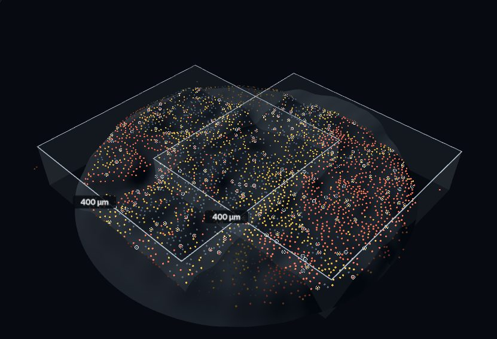

They plan 200 patients. Would a study like theirs find a real effect?
—simulated on real tissue
—the textbook formula ANALYTICSchoenfeld events formula
Biopsy Scan tells a lab, before it images a single slide, whether its study can find the pattern that decides a patient's treatment.
Survival, split at the cohort median of the pattern
exploratory cutoff chosen on the same cohort, no p-value
high low
100 µm of Tumor 5 Tumor 5 PD1+ macrophage (display rule below) macrophage other cells
Not yet timed: one design point, 1,000 studies, five ways
Each bar fills at its measured rate, scaled so the race takes about 10 s; real seconds print at the finish, start-up shown apart. A bar with no measured time stays PENDING.
Real cell positions and types from one patient in the Charville cohort (colorectal, not head and neck). Imaging simulated by Biopsy Scan.
Tumour Stroma Immune Field of view Mis-called

Loading the region's cells.
Cells: Charville CODEX, Wu et al. 2022 (Zenodo 13179600, CC-BY-4.0).
—simulated on real tissue
—the textbook formula ANALYTICSchoenfeld events formula
—false alarms
—
Full 1–16 A100 curve pending. 1 vs 8 A100s MEASURED: 6.3× less compute span, 4.4× Modal wall (2 repeats).
Labels: MEASURED, timed or counted on a real run; SYNTHETIC, planted data; SIMULATED, model power with no outcomes read; ESTIMATE, a rate over simulated studies; ANALYTIC, a formula.
Correctness and assumptions. False alarms stay near the nominal 5%: 6.0% (60/1,000 synthetic datasets, 95% CI 4.6%–7.7%) SYNTHETIC. Charville's best pattern is not significant (adjusted p = 0.0981, not proof of no signal) MEASURED; UPMC's locked test is inconclusive at 18% conditional power SIMULATED. hard-negative-f458ad1.json · charville-v2.json · UPMC locked test
Fundamental reshaping. 21× less compute wall per evaluated study than an optimised rewrite of the lab method, on 8 CPU cores, cross-run (14.0× per whole design point): a fused, compiled Numba kernel re-images and scores each study in batches; the calibrated cutoff and calls sit outside the timing. 2,000 lab studies against 3,000 Biopsy Scan studies (1,000 calibration nulls included), setup excluded, 8 workers against 8, different procedures MEASURED. modal-design-20261121T205536Z.json
Meaningful performance. 534× against off-the-shelf squidpy + lifelines, same host, median of the paired per-repeat ratios over 3 fresh containers (range 511–547×): 22.35 s per study over 48 external studies against 0.0426 s per evaluated study over 3,000 fused evaluations, 8 workers each; pipeline only, our reference recount and agreement checks timed separately (547× with them, the closest scope to the old 583× combined-checks basis); 312× on the same 48 studies; for 534× and 312× the external time is the whole off-the-shelf call per study (cells, squidpy, lifelines, Bonferroni call, each result returned to the parent) and the fused time covers re-imaging and batched scoring, and the calibrated cutoff and calls sit outside it; different statistics, top pick the same in 16 of 16 in a separate matched-feature, matched-score experiment MEASURED. 5.5× fair, 8 workers against 8 on the Numba kernel, compute per decided study with calibration charged (median of 3 repeats, range 4.6–5.6×); 28.0× faster on 64 CPU cores than on 1 (median of 3 repeats); 6.3× less compute span on 8 A100s than on 1 (median of 2 repeats; Modal wall 4.4×) MEASURED. same-host-20261122T140908Z.json · sweep-repeats.json
Scientific value. At 200 patients the simulation gives 27.0% power (81/300 studies) ESTIMATE; the textbook formula promises 80.1% ANALYTIC. Two 400 µm fields, 10% mis-calls, one synthetic outcome model at HR 2 per SD, 200 patients resampled from 159 on Charville's tissue. vs-schoenfeld-300.json
Honest limits. Power is lower: 15.3% (153/1,000) with Biopsy Scan's calibrated threshold against 20.3% (203/1,000) with the lab's per-study permutation, same design point; different procedures, synthetic outcomes ESTIMATE. modal-design-20261121T194458Z.json
Set the design; the power appears at once. Simulated values are read from studies already run, and the formula is computed from its published inputs, so nothing runs here.
SYNTHETIC
—simulated power
—the textbook formula Schoenfeld events formula: it ignores the window and the mis-calls
Tumour Stroma Immune Field of view 10% of cells mis-called, drawn in another class's colour